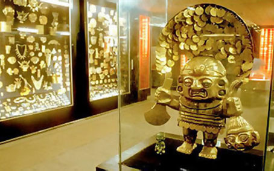
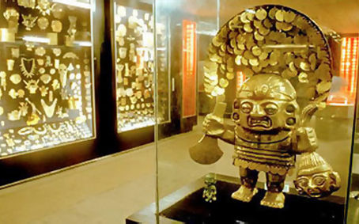

Perú es un país con una riqueza cultural e histórica incomparable. A través de sus museos, se puede hacer un viaje por las distintas etapas de su pasado, desde las culturas precolombinas hasta la era colonial y republicana. A continuación, te presentamos tres de los museos más representativos del país: el Museo Larco, el Museo de Oro del Perú y el Museo Nacional de Arqueología, Antropología e Historia del Perú.
Museo Larco
Ubicado en una antigua mansión virreinal del siglo XVIII, el Museo Larco se encuentra en el distrito de Pueblo Libre, en Lima. Fundado en 1926 por Rafael Larco Hoyle, este museo alberga una de las colecciones privadas más importantes de arte precolombino en el mundo. Su exposición permanente incluye más de 45,000 piezas cuidadosamente clasificadas, entre cerámicas, textiles, metales y objetos de oro y plata que reflejan la sofisticación de las antiguas culturas peruanas como la Moche, Nazca, Chimú y otras. Uno de los mayores atractivos del museo es su famosa sala erótica, donde se exhiben esculturas de cerámica que representan la sexualidad en el mundo prehispánico, algo único en América Latina. Además, el Museo Larco es muy visitado por su jardín botánico y su hermoso café con vista a un patio lleno de bugambilias.


Museo de Oro del Perú
El Museo de Oro del Perú, también ubicado en Lima, es otra joya que muestra el esplendor de las culturas ancestrales. Su colección incluye impresionantes piezas de oro y otros metales preciosos utilizados por civilizaciones como los Incas, los Mochicas y los Lambayeque, tanto en rituales religiosos como en objetos cotidianos. El museo posee máscaras funerarias, coronas, collares, pendientes, cinturones y cuchillos ceremoniales, muchos de ellos con incrustaciones de piedras preciosas. Cada pieza cuenta una historia sobre el poder, la religión y la vida en el mundo precolombino. Además, el museo cuenta con una sección dedicada a la colección de armas del mundo, donde se exponen más de 20,000 piezas provenientes de diversas épocas y regiones, desde espadas medievales hasta armas de fuego del siglo XIX. Este contraste entre la cultura ancestral y la colección bélica moderna hace de la visita una experiencia única y sorprendente.

 
